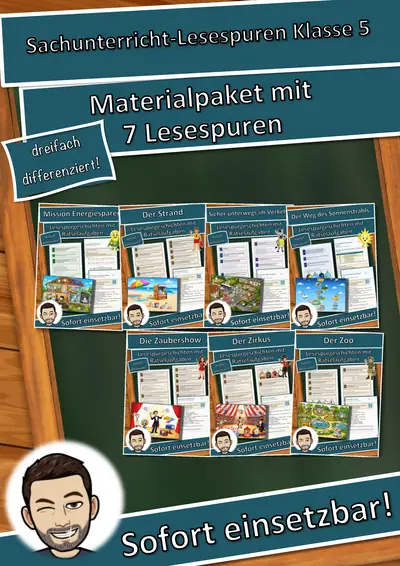
Materialpaket Lesespurgeschichten Sachunterricht Klasse 5: 7 Lesespuren mit Rätselaufgaben, dreifach differenziert
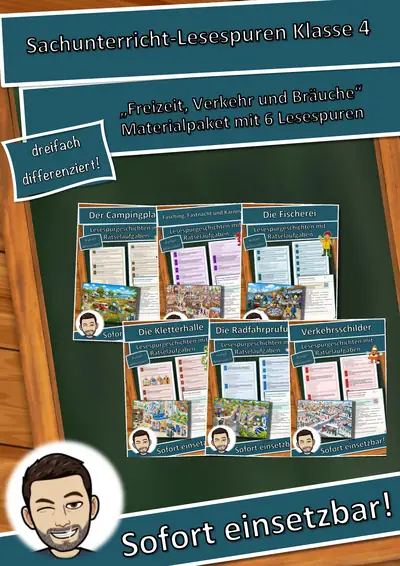
Materialpaket Lesespurgeschichten Sachunterricht Klasse 4 – Freizeit, Verkehr und Bräuche: 6 Lesespuren mit Rätselaufgaben, dreifach differenziert
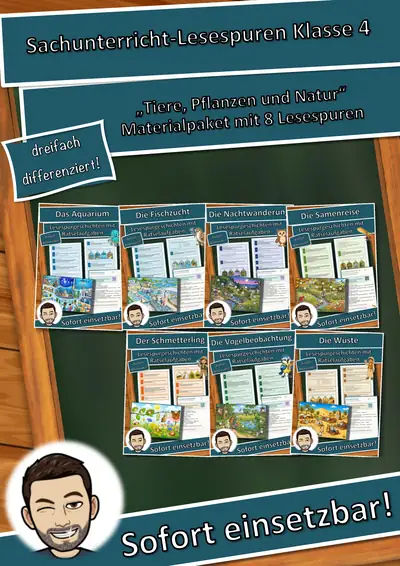
Materialpaket Lesespurgeschichten Sachunterricht Klasse 4 – Tiere, Pflanzen und Natur: 8 Lesespuren mit Rätselaufgaben, dreifach differenziert
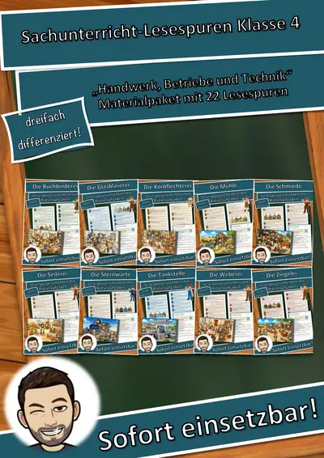
Materialpaket Lesespurgeschichten Sachunterricht Klasse 4 – Handwerk, Betriebe und Technik: 22 Lesespuren mit Rätselaufgaben, dreifach differenziert
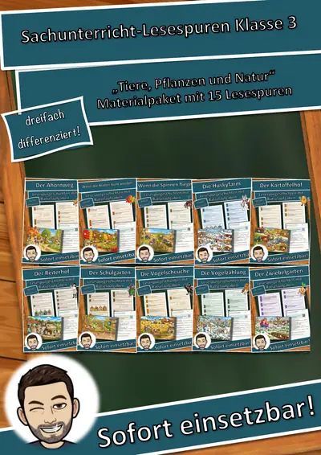
Materialpaket Lesespurgeschichten Sachunterricht Klasse 3 – Tiere, Pflanzen und Natur: 15 Lesespuren mit Rätselaufgaben, dreifach differenziert

Materialpaket Lesespurgeschichten Sachunterricht Klasse 3 – Alltag, Jahreslauf und Technik: 16 Lesespuren mit Rätselaufgaben, dreifach differenziert
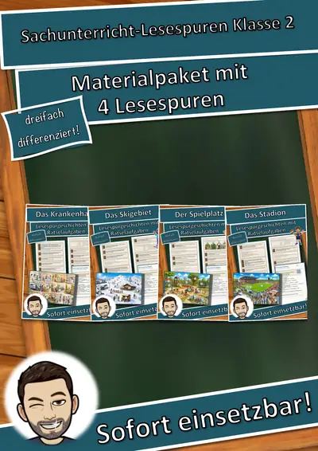
Materialpaket Lesespurgeschichten Sachunterricht Klasse 2: 4 Lesespuren mit Rätselaufgaben, dreifach differenziert

Lesespaziergang Materialpaket: 3 Geschichten, 6-fach differenziert – Herbst, Advent, Winter (Klasse 1–4, DaZ)

Lesespaziergang Vögel am Futterhaus – 6-fach differenziert mit Bildkarten, Sternchenaufgaben und Audio (Klasse 1–4)

Lesespaziergang Auf dem Weihnachtsmarkt – 6-fach differenziert mit Bildkarten, Sternchenaufgaben und Audio (Klasse 1–4)

Lesespaziergang Ein Nebeltag im November – 6-fach differenziert mit Bildkarten, Sternchenaufgaben und Audio (Klasse 1–4)

Materialpaket Winter und Advent für die 4. Klasse: 5 Lesespurgeschichten mit Rätselaufgaben (Weihnachtsmarkt, Fröbelsterne, Sternbilder & mehr)
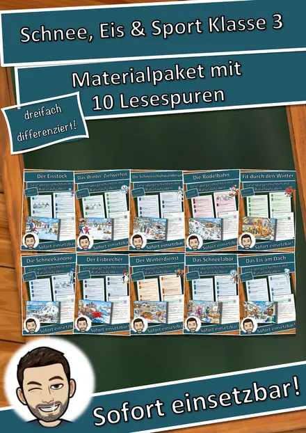
Materialpaket Schnee, Eis und Wintersport für die 3. Klasse: 10 Lesespurgeschichten mit Rätselaufgaben (Rodelbahn, Eisstock, Schneelabor & mehr)

Materialpaket Natur im Winter für die 3. Klasse: 10 Lesespurgeschichten mit Rätselaufgaben (Wintertiere, Winterwald, Schneespuren & mehr)

Halloween Wackel-Skelett – Bastelvorlage, Sachtext Skelett und Knochen beschriften, 3-fach differenziert (Klasse 3/4)

3D-Zauberbild Lebensraum Wald – Umkehrperspektive basteln, Sachtext und Forscherauftrag, 3-fach differenziert (Klasse 3/4)

Lesespaziergang: Frühblüher im Garten und im Wald – 3-fach differenziert (★/★★/★★★), Klasse 2–4
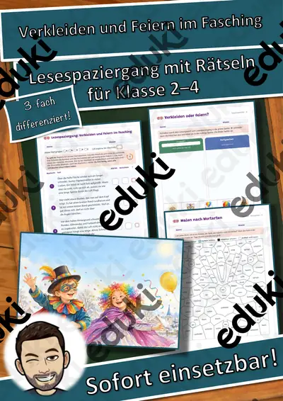
Lesespaziergang: Verkleiden und Feiern im Fasching – 3-fach differenziert (★/★★/★★★), Klasse 2–4

Lesespaziergang: Tiere in Eis und Wüste – 3-fach differenziert (★/★★/★★★), Klasse 2–4
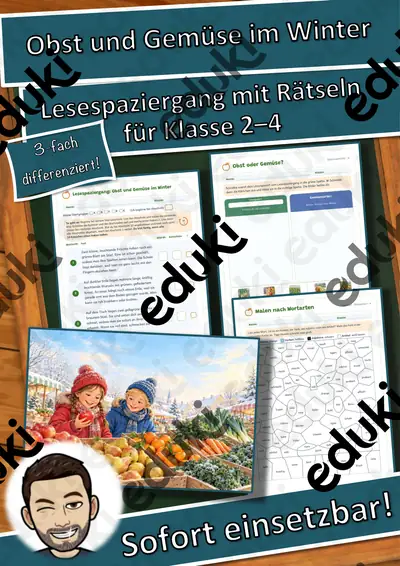
Lesespaziergang: Obst und Gemüse im Winter – 3-fach differenziert (★/★★/★★★), Klasse 2–4
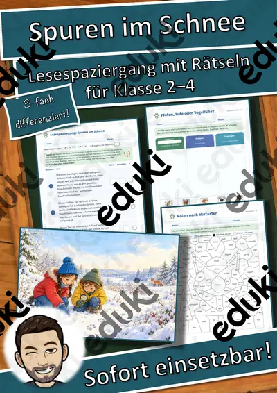
Lesespaziergang: Spuren im Schnee – 3-fach differenziert (★/★★/★★★), Klasse 2–4

Lesespaziergang: Plätzchen backen im Advent – 3-fach differenziert (★/★★/★★★), Klasse 2–4
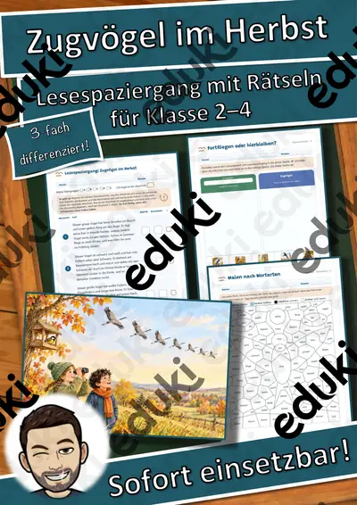
Lesespaziergang: Zugvögel im Herbst – 3-fach differenziert (★/★★/★★★), Klasse 2–4

Lesespaziergang: Blätter und Bäume im Herbst – 3-fach differenziert (★/★★/★★★), Klasse 2–4

Lesespaziergang: Vorräte der Tiere im Herbst – 3-fach differenziert (★/★★/★★★), Klasse 2–4
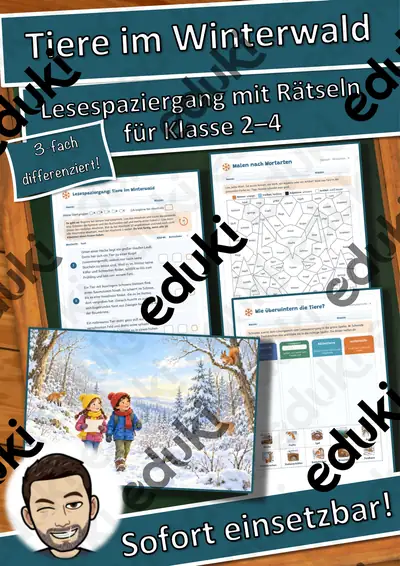
Lesespaziergang: Tiere im Winterwald – 3-fach differenziert (★/★★/★★★), Klasse 2–4

Lesespaziergang: Igel im Herbst – 3-fach differenziert (★/★★/★★★), Klasse 2–4

Lesespaziergang: Halloween-Nacht im Kürbisgarten – 3-fach differenziert (★/★★/★★★), Klasse 2–4

Frühlingsanfang – Tag und Nacht sind gleich lang – Lesespurgeschichte mit Rätselaufgaben (Klasse 3)
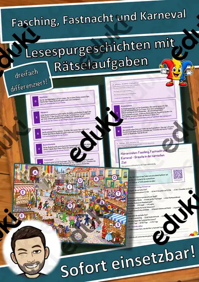
Fasching, Fastnacht und Karneval – Bräuche in der närrischen Zeit – Lesespurgeschichte mit Rätselaufgaben (Klasse 4)
Keine Materialien gefunden – versuch einen anderen Suchbegriff oder Filter.
Sachwissen, das sich erlesen lässt
Der Sachunterricht hat in der Grundschule die Aufgabe, Kindern die Welt um sie herum aufzuschließen: Natur, Jahreszeiten, Tiere, Technik, Zusammenleben. Ein Arbeitsblatt allein reicht dafür oft nicht. Deshalb sind die meisten Materialien dieser Seite als kleine Geschichten gebaut, durch die man sich bewegt: Ein Lesespaziergang führt im Rundlauf an zehn Bildkarten vorbei, eine Lesespurgeschichte verlangt an jeder Station eine Entscheidung, die nur mit verstandenem Text gelingt.
Klasse 1 und 2: Erste Sachtexte, viel Bild
Für die ersten beiden Schuljahre gibt es Lesespaziergänge mit kurzen Texten in mehreren Lesestufen, darunter „Lesespaziergang Vögel am Futterhaus“, „Lesespaziergang Ein Nebeltag im November“ und „Lesespaziergang Auf dem Weihnachtsmarkt“. Wer früh fertig ist, kann an einer anderen Geschichte weiterarbeiten, ohne dass die Klasse wartet. Mit dem „Lesespaziergang: Frühblüher im Garten und im Wald“ lässt sich im Frühjahr ein Blick ins Freie vorbereiten.
Klasse 3 und 4: Hier liegt der Kern
In den Jahrgängen 3 und 4 ist das Angebot am dichtesten. Mehrteilige Lesespurpakete wie „Materialpaket Natur im Winter für die 3. Klasse“ und „Materialpaket Schnee, Eis und Wintersport für die 3. Klasse“ decken ein Themenfeld in mehreren Geschichten ab. Dazu passen Einzelstücke wie „Sternbilder am Winterhimmel“ oder „Werkzeuge im Alltag“. Jede Geschichte liegt in drei Niveaustufen vor, sodass die Klasse zusammen arbeitet, obwohl sie unterschiedlich weit ist.
Über die Grundschule hinaus
Einzelne Titel reichen bis in die Klassen 5 bis 7, etwa „Reise durch das Sonnensystem“, „Der Zoo“ oder „Sicher unterwegs im Verkehr“. Sie eignen sich für den Übergang oder für Klassen, die zusätzliche Anreize zum Lesen brauchen.
Häufige Fragen
Passt das Material zum Heimat- und Sachunterricht aller Bundesländer?
Die Themen wie Jahreszeiten, Tiere im Winter oder Orientierung im Raum sind in den Lehrplänen der Länder verbreitet. Welche Einheit du wann einsetzt, richtet sich nach deinem Schulcurriculum.
Wie lange dauert ein Lesespaziergang?
Das hängt von der Klasse ab. Meist reicht eine Schulstunde, einschließlich Einstieg und Kontrolle des Lösungsworts.
Können Kinder allein damit arbeiten?
Ja, sobald sie den Ablauf einmal gesehen haben. Das Lösungswort dient der Selbstkontrolle.
Gibt es Hörversionen für leseschwächere Kinder?
Die Lesespurgeschichten enthalten eine Hörfassung per QR-Code. Bei den Lesespaziergängen unterstützen die drei Lesestufen.